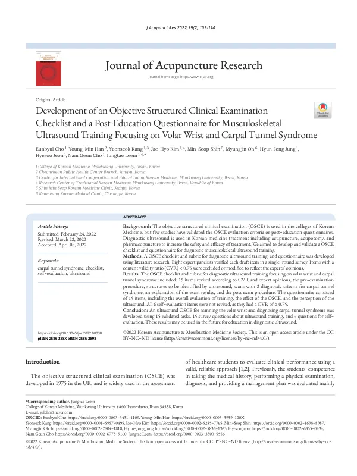

Development of an Objective Structured Clinical Examination Checklist and a Post-Education Questionnaire for Musculoskeletal Ultrasound Training Focusing on Volar Wrist and Carpal Tunnel Syndrome
Cho E, Han YM, Kang Y, Kim JH, Shin MS, Oh M, Jung HJ, Jeon H, Cho NG, Leem J
Journal of Acupuncture Research 39(2):105-114

첫 장 · 오픈액세스First page · open access
논문 소개Summary
객관구조화진료시험(OSCE)은 1975년 영국에서 만들어져 보건의료 교육 전반에 쓰이고 있습니다. 한의과대학도 평가인증 기준에 따라 해마다 한 번 이상 시행하고 있고, 다음 주기에는 임상 과목마다 최소 한 문항씩 열 개를 치러야 합니다. 그런데 무엇을 어떻게 채점할 것인가, 곧 체크리스트와 배점표를 타당화한 연구는 거의 없었습니다. 2030년 한의사 국가시험에 실기가 들어온다면 이 논의를 먼저 끝내야 합니다.
이 연구는 근골격계 초음파를 소재로 그 채점표를 만들고 타당화했습니다. 손목 앞쪽을 스캔하고 손목터널증후군을 진단하는 것을 과제로 골랐습니다. 이 부위의 구조물은 얕아 초보자도 스캔하기 쉽고, 몸을 드러낼 걱정이 없으며, 한의 의료기관에서 손목터널증후군으로 진단받고 치료받는 사람이 늘고 있어 임상적으로도 값이 있습니다.
교과서와 근골격계 초음파 서적, 선행연구를 훑어 초안을 만들었습니다. 검사 전 절차, 초음파로 확인할 구조물, 손목터널증후군의 두 가지 진단기준에 따른 스캔, 결과 설명, 검사 후 절차를 담아 11항목 23점으로 짰습니다. 이어 전문가 8명에게 한 차례 조사를 돌렸습니다. 한의학과 침구, 한방재활, 진단학, 경혈학 두 사람에 더해 교육정책과 교육학 전공자를 넣어 시각을 넓혔습니다. 내용타당도비율(CVR)이 0.75에 못 미친 항목은 빼거나 고쳤습니다.
최종본은 15항목 28점입니다. 프로브를 잘 다루는지 묻던 항목은 CVR이 0.5로 걸렸습니다. 숙련도의 기준이 모호하다는 지적을 받아, 방향과 위치를 조정하는지와 미끄러지지 않게 안정적으로 쥐는지를 함께 보도록 바꿨습니다. 젤을 프로브에 바른다고만 쓴 항목은 환자 몸에 발라도 된다는 의견을 받아 문장을 고쳤습니다. 교육 설문은 객관식 17문항과 주관식 2문항이던 초안이 객관식 14문항과 주관식 1문항으로 줄었고, 자기평가 6문항은 모두 CVR 0.75 이상이라 손대지 않았습니다.
저자들은 패널 8명이 델파이 기법에서 권하는 5~20명의 아래쪽에 있고 이들이 OSCE 운영에 직접 관여하는 사람들은 아니라는 점을 한계로 적었습니다. 그럼에도 이 연구는 한의학과 통합의학 분야에서 초음파 OSCE 체크리스트를 만들어 타당화한 첫 사례입니다. 한 항목에 한 가지 과제만 담아 채점자가 헷갈리지 않게 한 것도 이전 OSCE 경험에서 나온 판단이었습니다.
The Objective Structured Clinical Examination was devised in the United Kingdom in 1975 and is now used across health professions education. Korean medicine colleges run one at least once a year under accreditation requirements, and the next cycle demands ten stations covering every clinical subject. Yet almost no research had validated what is actually scored — the checklist and the rating scale. If a practical component enters the Korean medicine licensing examination in 2030, that discussion has to be settled first.
This study developed and validated such a scoring instrument for musculoskeletal ultrasound. Scanning the volar wrist and diagnosing carpal tunnel syndrome were chosen as the task. The structures there lie superficially, making the scan feasible for beginners; no bodily exposure is involved; and the number of people diagnosed and treated for carpal tunnel syndrome at Korean medicine institutions is rising, giving the task clinical value.
A draft was assembled from textbooks, musculoskeletal ultrasound references and prior studies: pre-examination procedure, structures to identify, scanning against the two diagnostic criteria for carpal tunnel syndrome, explanation of findings, and post-examination procedure — eleven items worth 23 points. Eight experts then completed a single-round survey. Alongside specialists in Korean medicine, acupuncture, rehabilitation, diagnostics and two in meridians and acupoints, the panel included one expert in education policy and one in pedagogy to widen the perspective. Items with a content validity ratio below 0.75 were removed or revised.
The final version has fifteen items worth 28 points. The item asking about probe handling scored a CVR of 0.5. Told that the criterion for proficiency was vague, the authors rewrote it to assess both adjustment of probe direction and position and whether the probe was held stably enough not to slip. An item specifying gel applied to the probe was rewritten after panellists noted it may equally be applied to the patient's skin. The training questionnaire shrank from seventeen multiple-choice and two open questions to fourteen and one, while all six self-evaluation items scored 0.75 or above and were left unchanged.
The authors note as limitations that eight panellists sit at the lower end of the five-to-twenty range recommended for Delphi work, and that these experts are not the people who run the OSCE itself. Even so, this is the first ultrasound OSCE checklist developed and validated in Korean or integrative medicine. Confining each item to a single task, so that scorers are not left guessing, was itself a judgement drawn from earlier OSCE experience.
인용Cite
Cho E, Han YM, Kang Y, Kim JH, Shin MS, Oh M, Jung HJ, Jeon H, Cho NG, Leem J. Development of an Objective Structured Clinical Examination Checklist and a Post-Education Questionnaire for Musculoskeletal Ultrasound Training Focusing on Volar Wrist and Carpal Tunnel Syndrome. Journal of Acupuncture Research. 2022;39(2):105-114. doi:10.13045/jar.2022.00038